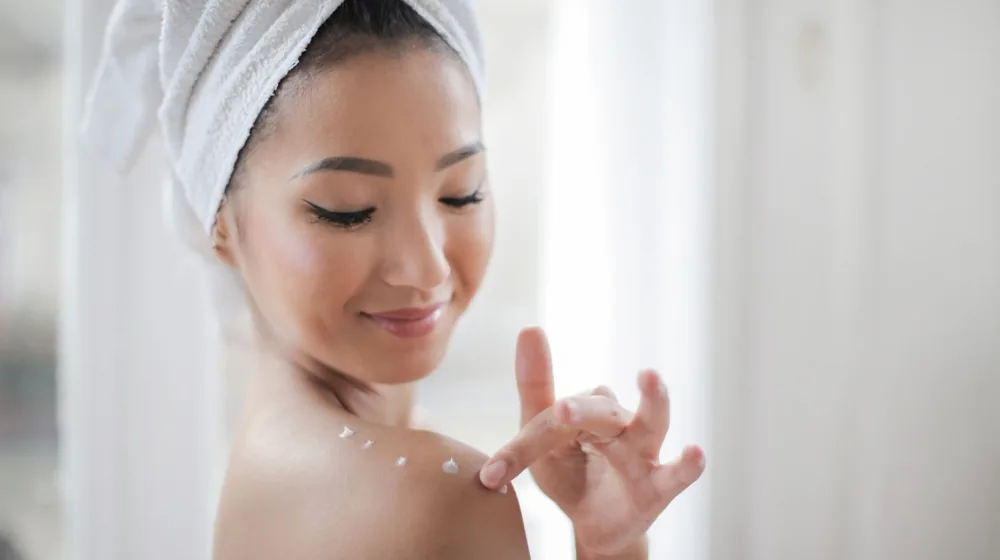

나에게 딱 맞는 스킨케어 루틴, 3가지 유형 완벽 비교
사진: https://kaboompics.com/ / Pexels (무료 이미지, 출처 표기)
나에게 맞는 스킨케어 루틴, 왜 중요할까?

쏟아지는 스킨케어 제품과 정보 속에서 어떤 루틴을 선택해야 할지 막막한 경우가 많습니다. 단순히 남들이 좋다고 하는 제품을 따라 쓰거나, 무작정 여러 단계를 추가하는 것은 오히려 피부에 부담을 줄 수 있습니다. 자신의 피부 타입과 고민에 맞는 루틴을 찾는 것은 시간과 비용을 절약하고, 피부 트러블을 예방하며 건강한 피부를 유지하는 첫걸음입니다.
피부는 계절, 환경, 컨디션에 따라 끊임없이 변화합니다. 따라서 한 번 정한 루틴을 고수하기보다, 주기적으로 자신의 피부 상태를 점검하고 유연하게 조정하는 지혜가 필요합니다. 이 글에서는 대표적인 스킨케어 루틴 세 가지를 비교하고, 나에게 최적화된 루틴을 고르는 실질적인 방법을 제시합니다.
대표적인 스킨케어 루틴 3가지 유형 비교
스킨케어 루틴은 크게 미니멀, 복합, 기능성 루틴으로 나눌 수 있습니다. 각 루틴은 장단점이 명확하므로, 자신의 피부 특성과 라이프스타일에 맞춰 신중하게 선택하는 것이 중요합니다. 2026년 10월 기준으로 각 루틴의 특징을 살펴보겠습니다.
내 피부 타입과 고민에 따른 루틴 선택 가이드
최적의 스킨케어 루틴을 찾기 위해서는 먼저 자신의 피부를 정확히 이해하고, 해결하고 싶은 피부 고민을 명확히 하는 것이 중요합니다. 다음 질문들을 통해 스스로에게 맞는 루틴을 찾아보세요.
- 피부 타입 진단: 건성, 지성, 복합성, 민감성 중 어느 쪽에 가까운가요? 세안 후 당김이 심하다면 건성, 번들거림이 심하다면 지성일 가능성이 높습니다. 민감성 피부는 특정 성분에 쉽게 반응하는 경향이 있습니다.
- 주요 피부 고민 파악: 여드름, 주름, 기미/잡티, 홍조, 탄력 저하 등 현재 가장 개선하고 싶은 피부 고민은 무엇인가요? 이 고민에 집중하여 기능성 제품을 추가할지, 아니면 기본적인 관리만으로 충분할지 결정할 수 있습니다.
- 생활 습관과 시간: 바쁜 아침, 저녁 시간에 여러 단계를 챙겨 바를 여유가 있나요? 아니면 최대한 간편한 방법을 선호하나요? 루틴을 꾸준히 실천하려면 자신의 생활 패턴에 맞는지가 중요합니다.
- 예산 고려: 스킨케어에 투자할 수 있는 대략적인 예산은 어느 정도인가요? 고가의 기능성 제품이나 여러 단계를 갖추는 복합 루틴은 그만큼 비용이 많이 들 수 있습니다.
예를 들어, 민감성 건성 피부에 큰 고민이 없다면 미니멀 루틴이 적합할 수 있습니다. 반면, 복합성 피부에 주름과 미백 개선을 동시에 원한다면 복합 루틴에 기능성 제품을 추가하는 형태를 고려해볼 수 있습니다.
스킨케어 루틴, 놓치지 말아야 할 체크리스트
나에게 맞는 루틴을 찾았다면, 더욱 효과적으로 관리하기 위한 몇 가지 주의사항을 기억해야 합니다. 올바른 습관은 스킨케어 효과를 극대화하는 데 도움을 줍니다.
- 새 제품 도입 시 패치 테스트: 새로운 제품을 사용하기 전에는 팔 안쪽이나 귀 뒤 등 민감하지 않은 부위에 소량 발라 24시간 이상 반응을 살피는 '패치 테스트'를 하는 것이 좋습니다. 특히 기능성 성분이 포함된 제품일수록 중요합니다.
- 계절 및 피부 컨디션에 따른 조정: 건조한 겨울철에는 보습을 강화하고, 피지 분비가 왕성한 여름에는 산뜻한 제형으로 바꾸는 등 계절에 따라 유연하게 루틴을 조절해야 합니다. 스트레스나 피로에 따라 피부 상태가 달라질 때도 마찬가지입니다.
- 성분 간 궁합 고려: 일부 스킨케어 성분은 함께 사용했을 때 시너지를 내거나, 오히려 자극을 유발할 수 있습니다. 예를 들어, 레티놀과 비타민C는 함께 사용 시 주의가 필요하며, 전문가와 상담하거나 제품 설명을 꼼꼼히 확인하는 것이 좋습니다.
- 건강한 생활 습관 유지: 아무리 좋은 스킨케어 루틴도 충분한 수면, 균형 잡힌 식단, 규칙적인 운동, 스트레스 관리 없이는 효과를 보기 어렵습니다. 피부는 몸의 건강 상태를 반영하므로, 근본적인 생활 습관 개선이 동반되어야 합니다.
자주 묻는 질문(FAQ)
Q: 스킨케어 제품은 꼭 비싼 것이 좋을까요?
A: 반드시 그렇지는 않습니다. 제품의 가격보다는 자신의 피부 타입과 고민에 맞는 성분이 포함되어 있는지, 피부에 자극을 주지 않는지 등 제품의 성분과 효능을 살펴보는 것이 중요합니다. 합리적인 가격대의 제품 중에서도 좋은 효과를 주는 경우가 많습니다.
Q: 스킨케어 제품을 바르는 순서가 중요한가요?
A: 일반적으로 점도가 묽은 제품부터 바르는 것이 좋습니다. 예를 들어 토너 → 세럼/앰플 → 로션 → 크림 순서입니다. 이는 묽은 제형이 피부에 먼저 흡수되어 다음 단계 제품의 흡수를 돕고, 유효 성분이 효과적으로 전달되도록 하기 위함입니다.
Q: 남성도 여성과 같은 스킨케어 루틴이 필요한가요?
A: 남성 피부는 여성 피부와 구조적으로 차이가 있지만, 기본적인 스킨케어 원리는 동일합니다. 세안, 보습, 자외선 차단은 남녀 모두에게 중요합니다. 다만 남성 피부는 일반적으로 피지 분비가 많고 면도 등으로 인한 자극이 잦으므로, 이에 특화된 제품을 선택하거나 진정 및 수분 공급에 더 신경 쓰는 것이 좋습니다.
🔗 이 글도 함께 보면 좋아요: 내 피부는 과연 무슨 타입? 스킨케어 루틴 3단계로 완벽 정복
관련 추천 상품
스킨케어 제품, 피부 타입 화장품 관련 인기 상품 보러가기
이 포스팅은 쿠팡 파트너스 활동의 일환으로, 이에 따른 일정액의 수수료를 제공받습니다.